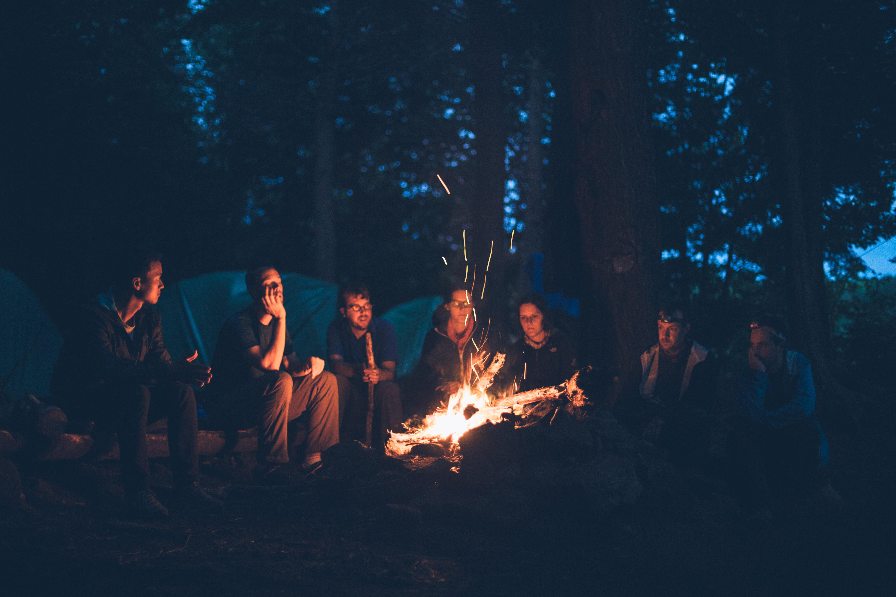

We have gobs of fun running rivers, and we think you will also. River rafting is great for corporate retreats, youth activities, or family adventures. Please scroll down to see how much fun we had this year.
Oh the Fun You Will Have
Few activities are as exciting as shooting the white water. The great thing about river running is that most rivers have several such rapids. They are exciting and have some dangerous elements; however, our guides are trained and certified in first aid and emergency procedures and as guides to one of the most incredible rides on planet Earth. With each rapid, your heart will race, and your senses will heighten. You will feel alive and alert. These experiences tend to bind a team, family, or youth group into one cohesive group. You can use them to drive home a point or create camaraderie and loyalty you can get any other way.

Peace at the End of the Day
At the end of each day, you will be exhausted. But, it will be good exhaustion. Although your muscles will ache from rowing, you will have a great feeling, having enjoyed nature and the thrill of the river. You can use this time to bond as a team, family, or organization while our guides prepare a delicious meal. With Camp set up and your bellies full, you will sleep better than you have in ages.